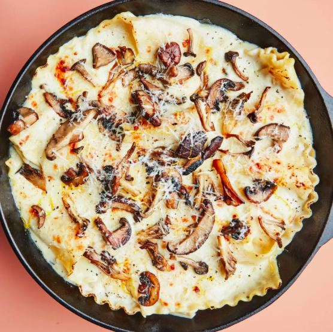

Stovetop Mushroom Lasagna

Description
This isn’t your classic beautifully layered lasagna—but it is a little more weeknight-friendly. Instead of boiling the noodles in one pot and making the sauce in another, you cook lasagna noodles directly in a mixture of milk, crème fraîche, water, and a little lemon zest, which thickens arounds the pasta as it bubbles away. (You can use sour cream in place of crème fraîche; to keep it from breaking, temper it with a little of the hot milk, then whisk in thoroughly.)
The key to success is using a big enough pan—a large sauté pan or skillet with high sides or a Dutch oven that holds at least four quarts. We pop the lasagna in the broiler for a crispy top, but you can add the mozzarella in the last few minutes on the stove if you don’t want to turn the oven on.
Ingredients
- 5 Tbsp. extra-virgin olive oil, divided
- 12 oz. mixed mushrooms, trimmed, torn into 1" pieces
- Kosher salt
- 2 Tbsp. thyme leaves
- 1 large shallot, finely chopped
- 3 garlic cloves, finely grated
- 2 Tbsp. all-purpose flour
- 2 3/4 cups whole milk
- Freshly ground black pepper
- 1 lemon
- 1/3 cup crème fraîche or thinned sour cream
- 8 oz. regular lasagna noodles, broken in half
- 4 oz. mozzarella, thinly sliced
- Finely grated Parmesan (for serving)
Steps
- Heat 3 Tbsp. oil in a large high-sided ovenproof skillet or small Dutch oven over medium-high. Add mushrooms and cook, undisturbed, until starting to brown, about 4 minutes. Season with salt and cook, tossing occasionally, until golden brown, 5–7 minutes. Transfer to a bowl; mix in thyme.
- Reduce heat to medium-low. Heat remaining 2 Tbsp. oil in skillet. Add shallot and garlic and cook, stirring, until starting to soften, about 1 minute. Sprinkle flour over and cook, stirring, until golden, about 1 minute.
- Add milk, pepper, 1½ tsp. salt, and 1¾ cups water, then finely grate zest of ¼ lemon into pan. Stir to dissolve flour, increase heat to medium, and cook until gently bubbling. Reduce heat to low, whisk in crème fraîche, and stir to combine. Add about one third of noodles, pushing down into sauce to submerge, followed by a third of mushrooms. Repeat with half of remaining noodles and mushrooms. Top with another layer of noodles. Set remaining mushrooms aside. Cover with a lid or foil and cook 15 minutes. (If lasagna threatens to boil over, use very lowest heat and/or prop open the cover.) Uncover; cook, gently lifting and separating noodles occasionally with tongs or a spatula to let sauce flow around, until sauce is thickened and noodles are cooked through, 6–8 minutes. Mixture should be bubbling gently; adjust heat as necessary. Remove from heat.
- Heat broiler. Top lasagna with mozzarella and reserved mushrooms. Broil until cheese is bubbling and browned in spots, about 2 minutes. Finely grate more lemon zest over. Sprinkle with Parmesan; season with pepper. Let sit 5–10 minutes. Cut lemon into wedges and serve with lasagna.